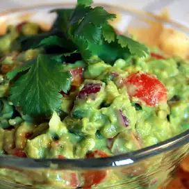

This page is about directions for how to make guacamole.
This is my favorite food for many reasons- it is delicious, easy to make, and highly customizable,
and as a vegetarian dish it is relatively healthy and completely cholesterol free. .
There are two other pages that are a part of this guacamole project: